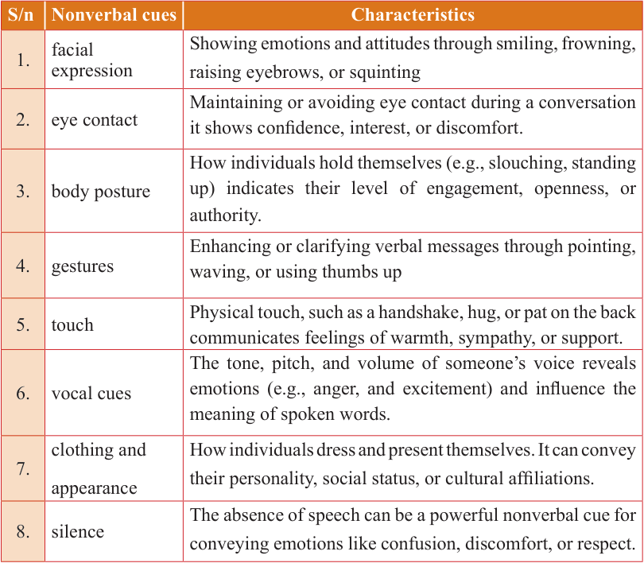

English for Secondary Schools Student’s Book Form One, printed page 130
DO YOU KNOW?
Nonverbal cues are very important in communication because they convey emotions, attitudes and intentions without the use of words. They include various aspects of body language, facial expressions, gestures, vocal tones and other signals that are expressed through body movements and actions. It is important, however, to remember that nonverbal cues can vary significantly across cultures, and therefore, interpreting them correctly requires sensitivity and cultural awareness. Study the following nonverbal cues and their characteristics.
S/n Nonverbal cues Characteristics

| S/n | Nonverbal cues |
|---|---|